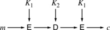
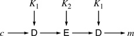
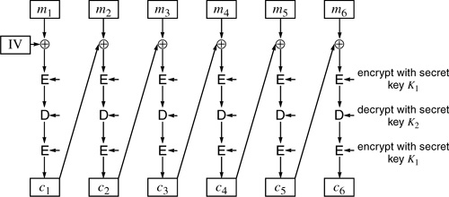
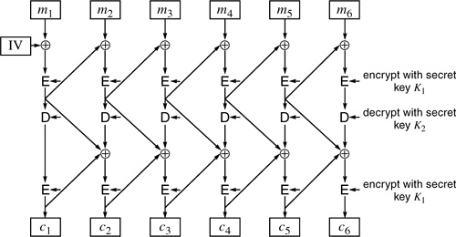
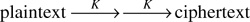
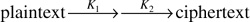

Networking Security Networking Security Networking Security Security Networking Security Networking Security Networking Charlie Kaufman Radia Perlman Mike Speciner Prentice Hall Network Security: Private Communication in a Public World, Second Edition Networking Security Networking Security Networking Security Security Networking Security Networking Security Networking Charlie Kaufman Radia Perlman Mike Speciner Prentice Hall Network Security: Private Communication in a Public World, Second Edition
4.4. Multiple Encryption DES
The generally accepted method of making DES more secure through multiple encryptions is known as EDE (for encryptÂdecryptÂencrypt) or 3DES.
Actually, any encryption scheme might be made more secure through multiple encryptions. Multiple encryption, though, has specifically been discussed in the industry in order to arrive at a "standard" means of effectively increasing DES's key length. EDE could as easily be done with, say, IDEA. It is more important with DES than with IDEA, though, because of DES's key length (or lack thereof).
Remember that a cryptographic scheme has two functions, known as encrypt and decrypt. The two functions are inverses of each other, but in fact each one takes an arbitrary block of data and garbles it in a way that is reversed by the other function. So it makes sense to perform decrypt on the plaintext as a method of encrypting it, and then perform encrypt on the result as a method of getting back to the plaintext again. It might be confusing to say something like encrypt with decryption, so we'll just refer to the two functions as E and D.
How to do multiple encryption is not completely obvious, especially since there is also the problem of turning block encryption into stream encryption. The standard method for using EDE is:
Two keys are used: K1 and K2. Each block of plaintext is subjected to E with K1, then D with K2, and then E with K1. The result is simply a new secret key schemeÂa 64-bit block is mapped to another 64-bit block.

Decryption simply reverses the operation.

CBC is used to turn the block encryption scheme resulting from step 2 into a stream encryption (Figure 4-15).

Now we'll discuss why 3DES is defined this way. There are various choices that could have been made:
Three encryptions were chosen. It could have been 2 or 714. Is three the right number? Why are the functions EDE rather than, say, EEE or EDD? Why is the cipher block chaining done on the outside rather than on the inside? Doing CBC on the inside (Figure 4-16) means completely encrypting the message with CBC, then completely decrypting the result with CBC using a second key, and then completely CBC-encrypting the message again. Doing CBC on the outside (Figure 4-15) means performing the DES encryptions and decryption on each block, but only doing the CBC once.

4.4.1. How Many Encryptions?
Let's assume that the more times the block is encrypted, the more secure it is. So encrypting 749 times would therefore be some amount more secure than encrypting 3 times. The problem is, it is expensive to do an encryption. We don't want to do any more encryptions than are necessary for the scheme to be really secure.
4.4.1.1. Encrypting Twice with the Same Key
Suppose we didn't want to bother reading in two keys. Would it make things more secure if we encrypted twice in a row with the same key?

This turns out not to be much more secure than single encryption with K, since exhaustive search of the keyspace still requires searching only 256 keys. Each step of testing a key is twice as much work, since the attacker needs to do double encryption, but a factor of two for the attacker is not considered much added security, especially since the good guys have their work doubled with this scheme as well.
(How about E followed by D using the same key? That's double the work for the good guy and no work for the bad guy, so that's generally not considered good cryptographic form.)
4.4.1.2. Encrypting Twice with Two Keys
If encrypting twice, using two different keys, were as secure as a DES-like scheme with a key length of 112 bits, then encrypting twice would have sufficed. However, it isn't, as we will show.
We'll use two DES keys, K1 and K2, and encrypt each block twice, first using key K1 and then using key K2. For the moment, let's ignore any block chaining schemes and assume we're just doing block encryption.

Is this as cryptographically strong as using a double-length secret key (112 bits)? The reason you might think it would be as strong as a 112-bit key is that the straightforward brute-force attack would have to guess both K1 and K2 in order to determine if a particular plaintext block encrypted to a particular ciphertext block.
However, there is a less straightforward attack that breaks double-encryption DES in roughly twice the time of a brute-force breaking of single-encryption DES. The attack is not particularly practical, but the fact that it exists makes double encryption sufficiently suspect that it's not generally done.
The threat involves the following steps:
| | 1. | Assume you have a few <plaintext,ciphertext> pairs <m1,c1>, <m2,c2>, <m3,c3> where ci was derived from doubly encrypting mi with K1 and K2. You want to find K1 and K2.
| 2. | First make Table A with 256 entries, where each entry consists of a DES key K and the result r of applying that key to encrypt m1. Sort the table in numerical order by r.
| 3. | Now make Table B with 256 entries, where each entry consists of a DES key K and the result r of applying that key to decrypt c1. Sort the table in numerical order by r.
| 4. | Search through the sorted lists to find matching entries, <KA,r> from table A and <KB,r> from Table B. Each match provides KA as a candidate K1 and KB as a candidate K2 because KA encrypts m1 to r and KB encrypts r to c1.
| 5. | If there are multiple intermediate values (which there almost certainly will be), test the candidate K1 and K2 against m2 and c2. If you've tested all the candidate <K1,K2> pairs and multiple of them work on m2 and c2, then try m3 and c3. The correct pair will always work, of course, and an incorrect pair will almost certainly fail to work on any particular <mi, ci> pair. (See below for exact numbers, if you care.)
|
This attack is not really practical, since a table of size 256 is a bit daunting. The existence of the attack, though, is enough reason to bother doing triple DES encryption. It may be that double encryption would be good enough, but since triple encryption isn't that much harder, it will save you from defending yourself to management when they ask you why you're doing double encryption when they've heard that double encryption isn't secure.
How many matches should you expect to find after searching the two tables? Well, there are 264 possible blocks, and only 256 table entries in each table (because there are only 256 keys). Therefore each 64-bit block has only a 1 in 256 chance of appearing in each of the tables. Of the 256 blocks that appear in Table A, only 1/256 of them also appear in Table B. That means that there should be about 248 entries which appear in both tables. One of those corresponds to the correct <K1,K2> pair and the others are imposters. We'll test them against <m2,c2>. If <K1,K2> is an imposter, the probability that D(c2,K2) will equal E(m2,K1) is about 1/264. There are about 248 imposters, so the probability of one of them satisfying D(c2,K2) = E(m2,K1) is about 248/264, or roughly 1 in 216. Each test against an additional <mi, ci> reduces the probability by a factor of 264, so the probability that there will still be false matches after trying three <m, c> pairs is about 1/280.
4.4.1.3. Triple Encryption with only Two Keys
3DES does triple encryption. Why does 3DES use only two keys? Presumably, security cannot possibly be enhanced because K1 is used twice rather than using a third key. People believe using K1 twice in this way is sufficiently secure that there's no reason to bother generating, transmitting, and storing a third key. For avoiding the brute-force exhaustive key space attack, 112 bits of key is considered sufficient, and no attacks other than the straightforward brute-force search is known for EDE. Some systems do implement 3DES with three independent keys, but this is not the standard.
An esoteric reason for using only two keys is that in some applications (like §5.2.4.1 UNIX Password Hash) an important property of a cryptosystem is that given a <plaintext, ciphertext> pair, it is impractical to find any key that maps the plaintext to the ciphertext. (With 64-bit blocks and 112-bit keys, there will be lots of such keys.) Using EDE with three keys, it is straightforward to find a triple of keys that maps a given plaintext to a given ciphertext (Homework Problem 4). There is no known practical way of finding such a triple with K1 = K3.
Why is K2 used in decrypt mode? Admittedly, it is no more trouble to run DES in either mode, and either way gives a mapping. DES would be just as good always done backwards (i.e., swap encrypt and decrypt). One reason for the choice of EDE is that an EDE system with K1 = K2 is equivalent to simple DES, so that such a system can interoperate with a simple DES system.
4.4.2. CBC Outside vs. Inside
To review, the 3DES commonly used in the industry (and defined in §4.4 Multiple Encryption DES) does CBC on the outside, which means that each block is triply encrypted, and the CBC is done on the triply encrypted block (see Figure 4-15). The alternative would be to completely encrypt the message with K1 and CBC, and then take the result and completely decrypt it with K2 and CBC, and then take the result and completely encrypt it with K1 (see Figure 4-16).
What are the implications of this choice?
As shown in §4.2.2.1 CBC Threat 1ÂModifying Ciphertext Blocks, with CBC it is possible to make a predictable change to plaintext block n, for instance flipping bit x, by flipping bit x in ciphertext block n-1. There is a side-effect, though, of completely garbling plaintext block n-1. Whether an attacker can use this for nefarious purposes depends on the exact application.
With CBC done on the outside, an attacker can still do the same attack. The fact that the encryption scheme involves triple use of DES does not change the effects of CBC. An attacker that flips bit x in ciphertext block n-1 will completely and unpredictably (to the attacker) garble plaintext block n-1. However, plaintext block n will have bit x flipped. And all plaintext blocks other than n-1 and n will be unaffected.
With CBC done on the inside, any change to ciphertext block n completely and unpredictably garbles all plaintext blocks from n to the end of the message. This makes CBC done on the inside more secure, and perhaps would therefore have been a better choice. However, sometimes people would prefer if garbling of a ciphertext block did not garble the entire rest of the message. They'd prefer that the encryption scheme be self-synchronizing, which means that after some small number of garbled blocks, the plaintext will start decrypting properly again. There are also subtle security flaws with CBC on the inside if the attacker can supply chosen plaintext and IV and examine the output.
Another advantage of CBC on the inside is performance. With CBC on the inside it is possible to use three times as much hardware and pipeline the encryptions so that it is as fast as single encryption. With CBC on the outside, this is not possible.
One reason that people choose CBC on the outside despite its disadvantages is that EDE encryption can be considered a new secret key block encryption scheme that uses a 112-bit key. This can then be used with any of the chaining methods (OFB, ECB, CFB, CTR, as well as CBC).
|